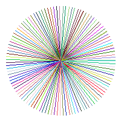

LineXY()
Syntax
LineXY(x1, y1, x2, y2 [, Color])Description
Draw a line using the location of the start- and endpoint on the current output. The current output is set with StartDrawing().
Parameters
x1, y1 The location of the startpoint of the line. x2, y2 The location of the endpoint of the line. Color (optional) The color to be used for the line. If this parameter is not specified, the default color set with FrontColor() will be used. This color can be in RGB or RGBA format.
Return value
None.
Remarks
To draw a line given the start coordinates and the dimensions, use the Line() function.
Example
If OpenWindow(0, 0, 0, 200, 200, "2DDrawing Example", #PB_Window_SystemMenu | #PB_Window_ScreenCentered) If CreateImage(0, 200, 200) And StartDrawing(ImageOutput(0)) Box(0, 0, 200, 200, RGB(255, 255, 255)) For Angle = 0 To 360 Step 3 LineXY(100, 100, 100+Cos(Radian(Angle))*90, 100+Sin(Radian(Angle))*90, RGB(Random(255), Random(255), Random(255))) Next Angle StopDrawing() ImageGadget(0, 0, 0, 200, 200, ImageID(0)) EndIf Repeat Event = WaitWindowEvent() Until Event = #PB_Event_CloseWindow EndIf

See Also
Line(), Box(), RoundBox(), Ellipse(), Circle() FrontColor(), RGB(), RGBA()
Supported OS
All